10种常见的架构模式
想知道如何设计大型企业级的系统吗？在开始主要的代码开发之前，我们必须选择一种合适的体系架构，它将为我们提供所需的功能和质量属性。因此，在将它们应用到我们的设计之前，应该先了解不同的体系结构。
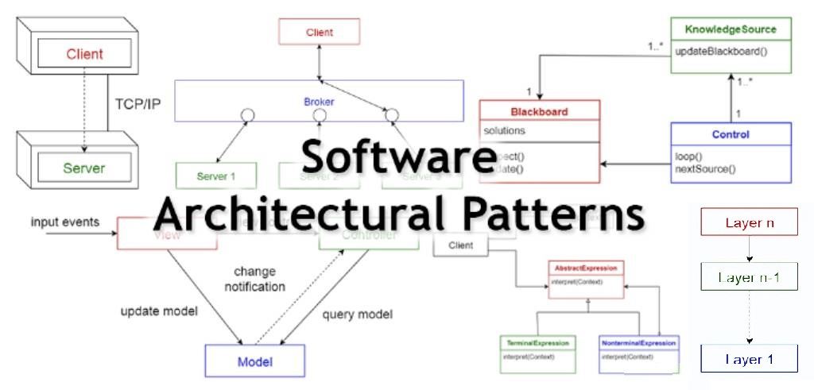
- 什么是架构模式 -
根据维基百科，架构模式是在给定上下文中解决软件架构中常见问题的通用、可重用的解决方案。架构模式类似于软件设计模式，但范围更广。
在本文中，我会简单介绍下列10种常见的架构模式，及其用途、优势和劣势。
- 1 分层模式 -
该模式可用于构建可分解为子任务组的程序，其中每个都处于特定的抽象级别。每一次都向更高层提供服务。一般信息系统中最常见的4层划分如下：
Presentation layer 表示层 （也就是UI层） Application layer 应用层 （也就是服务层） Business logic layer 业务逻辑层（也就是领域层） Data access layer 数据访问层（也就是数据持久层）
应用
- 一般桌面应用程序
- 电子商务Web应用程序
- 2 客户端-服务器模式 -
该模式由两部分组成：一个服务端和多个客户端，服务器向多个客户端提供服务。客户端向服务器发起请求，服务器向这些客户端提供相关服务，之后，服务器继续侦听客户端的请求。
应用
- 在线应用程序，如电子邮件、文件共享和银行业务等
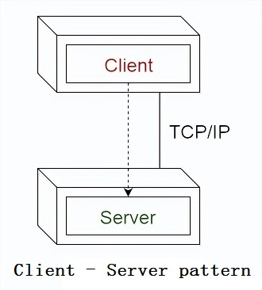
- 3 主从模式 -
该模式也分为两块：主模块和从模块。主模块在相同的从模块之间分配工作，并根据从模块返回的结构来计算最终的结果。
应用
- 在数据库复制中，主数据库被视作权威数据源，而从数据库与其保持同步
- 连接到计算机系统总线上的外围设备（主驱动器和从驱动器）
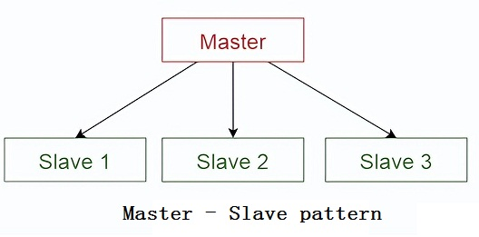
- 4 管道过滤模式 -
此模式可用于构建产生和处理数据流的系统。每个处理步骤都包含在一个过滤器组件中，要处理的数据通过管道传递。这些管道可用于缓冲或者同步。
应用
- 编译器。依次使用不同的过滤器执行词法分析、解析、语法分析和代码生成
- 生物信息学中的工作流程
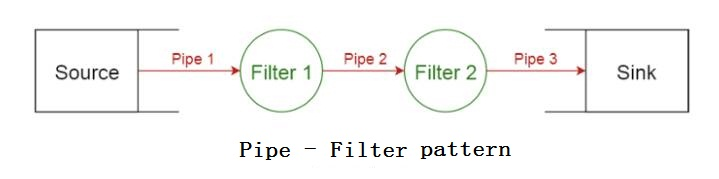
- 5 Broker模式 -
此模式是使用解耦的组件构建分布式系统，这些组件可以通过远程服务调用实现交互。代理组件负责协调组件之间的通信。服务器将它们的功能（服务和特征等）发布到代理，客户端向代理请求服务，然后代理根据其注册表将客户端请求转发给合适的服务。
应用
- 消息代理软件，如 Apache ActiveMQ, Apache Kafka, RabbitMQ 和 JBoss Messaging.
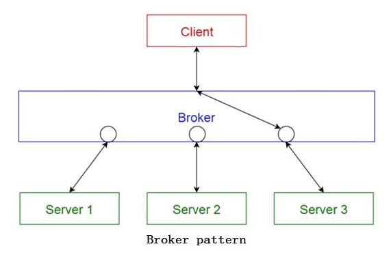
- 6 P2P模式 -
在此模式中，每个独立的组件被称为对等点（或对等端，peer）。对等端既可以充当客户端（向其它对等端请求服务），又可以充当服务器（向其它对等方提供服务）。同一个对等端可能既是客户端，又是服务器，并且可以动态改变其角色。
应用
- 文件共享网络，如Gnutella 和 G2
- 多媒体协议，如P2PTV 和 PDTP
- 基于加密货币的产品，如比特币和区块链
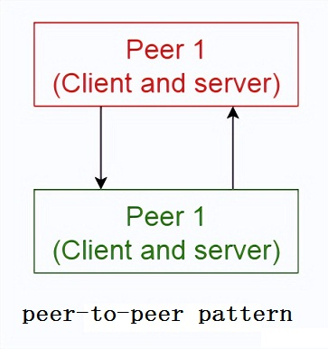
- 7 事物总线模式 -
该模式主要处理组件，有4个重要的组件：事件源、事件侦听器、通道和事件总线。事件源将消息发送到事件总线上的特定通道，侦听器会订阅特定的频道。当消息发送到频道中后，订阅该频道的侦听器会收到该消息的通知。
应用
- 安卓开发
- 通知服务
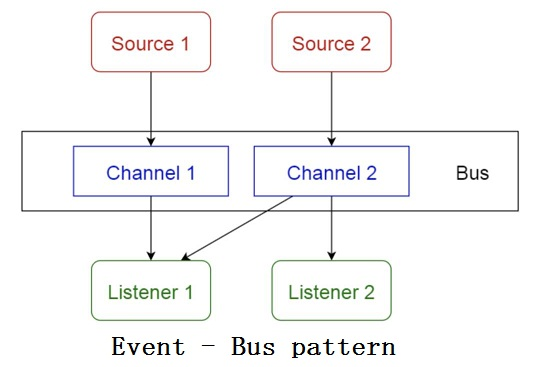
- 8 MVC模式 -
该模式将交互式应用分为三个部分，
- 模型——包含核心功能和数据
- 视图——向用户显示信息（可以定义多个视图）
- 控制器——处理用户的输入
这样做是为了将数据的内部表示与用户输入和向用户展示的形式分离开来，这样可以解耦组件，同时也可以进行高效的代码重用。
应用
- 主流编程语言的互联网应用架构
- 网络框架，如Django 和 Rails.
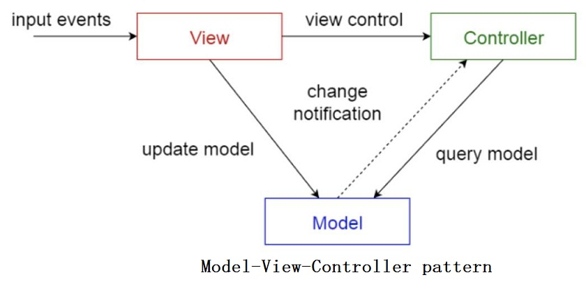
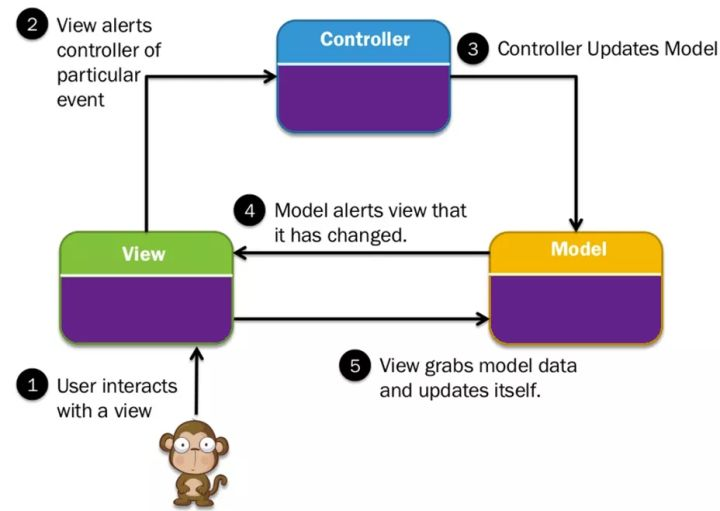
- 9 黑板模式 -
此模式对于尚无确定性解决方案的问题很有用，黑板模式由三部分组成：
- 黑板—— 一个结构化的全局内存，包含解决方案领域的对象
- 知识源——具有自身含义的专业模块
- 控制组件——选择、配置和执行模块
所有组件都可以访问黑板，组件可能会产生要添加到黑板中的新数据对象，组件在黑板上寻找特定类型的数据，并且可以通过与现有知识源进行模式匹配来找到这些数据。
应用
- 语音识别
- 车辆识别与跟踪
- 蛋白质结构鉴定
- 声呐信号解释

- 10 解释器模式 -
此模式通常用于设计组件来解释使用专用语言写出的程序，它主要指定如何估算程序行，即以特定语言编写的语句或表达式。基本思想是为每种语言符号都设计一个类。
应用
- 数据库查询语言，如SQL
- 用于描述通信协议的语言
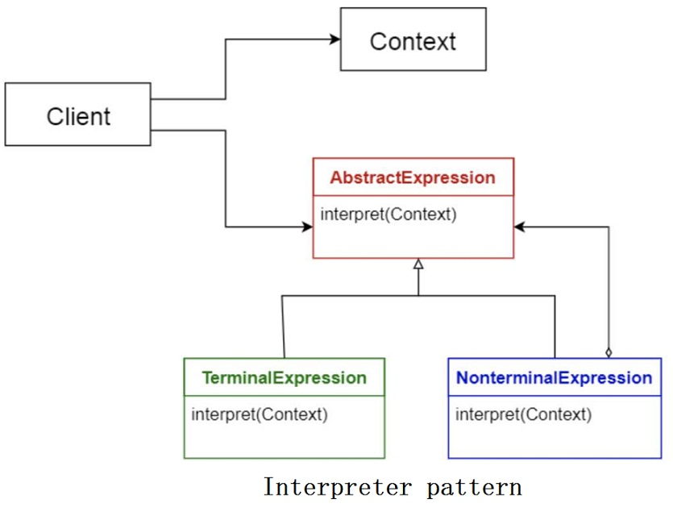
- 架构模式对比 -
| 模式 | 优点 | 缺点 |
|---|---|---|
| 分层模式 | 一个底层服务可以被不同的高层服务使用；分层结果更容易进行标准化，因为可以清晰地定义每个层级层级内的修改不会影响其它层 | 不是普适性的架构；某些场景下，需要跳过其中一些分层 |
| CS模式 | 容易对系列服务进行建模，供客户端请求 | 请求通常是在服务器的不同线程中进行响应的；因为不同客户端有不同形式，进程间通信会造成很大负载 |
| 主从模式 | 准确性——服务的执行委托给了不同的从模块 | 从模块是独立的：没有共享状态；主从模块间的通信延迟可能是一个问题，尤其在实时系统中。 |
| 管道过滤器模式 | 支持并发处理，其中输入、输出由数据流组成时，过滤器在接收到数据时即开始计算；容易添加过滤器，系统很容易扩展；过滤器可重用，可以通过重新组合已有的过滤器来创建不同的管道流。 | 整体效率受最慢的过滤程序限制；从一个过滤器传递到另一个时，存在数据转换的负载 |
| 代理模式 | 允许对象进行动态的修改、增、删、重定位，对开发者来说内容分发是透明的 | 需要对服务描述进行标准化 |
| P2P模式 | 支持去中心化运算；对任意节点的失败都有高度稳定性；在资源和计算能力方面具有高度可伸缩性 | 无法保证服务质量，因为节点之间是自愿合作的；很难保证安全；性能取决于节点的数量 |
| 事件总线模式 | 很容易向系统好加入新的发布者、订阅者和连接；对于高度分布式应用很有效 | 伸缩性可能是个难题，因为所有的信息传输都要通过相同的时间总线 |
| MVC模式 | 对同一模型很容易构建多个视图，在运行时可以任意连接或断开 | 增加了复杂性，用户操作可能导致很多不必要的更新 |
| 黑板模式 | 容易添加新应用；很容易扩展数据空间中的结构 | 修改数据空间的结构很难，因为所有的应用都会被影响；可能需要同步机制和访问控制 |
| 解释器模式 | 可能支持高度动态化行为；有利于终端用户的可编程性；增强了灵活性，因为替换一个解释程序很容易 | 因为解释型语言通常比编译型语言要慢，因此性能可能是一个问题 |
1 驱动架构
驱动架构的思想是将应用逻辑解耦为单一用途的事件处理组件，以异步方式接收和处理事件。这是一种较为收欢迎的分布式异步架构模型，以高扩展性和适应性出名。
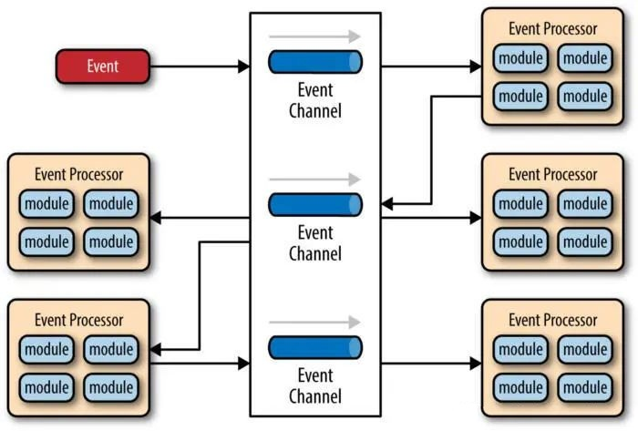2 微内核架构（插件架构）
微内核架构中的设计模式包含两大部分：核心系统和插件模块。
最典型的例子如WEB浏览器，它相当于核心系统，可以让你无限地安装扩展程序。
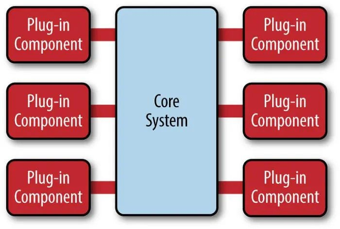3 微服务架构
微服务架构由单独部署的服务组成，每个服务最好豆油一个单一的责任。这些服务彼此之间相互独立也相互依赖，当其中一个服务出现故障时，其他服务不会因此中断。
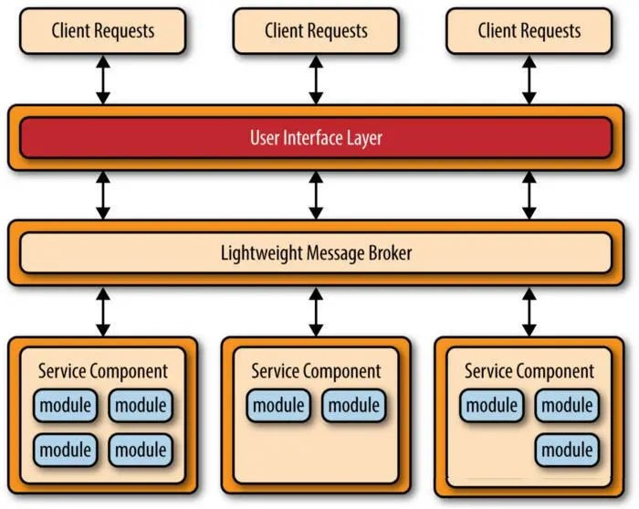4 基于空间的架构（云架构）
云架构的主要思想是分布式共享内存，以缓解经常发生在数据库层面的问题。
通过使用内存数据处理大部分操作，这样就可以避免在数据库中进行额外的操作，从而避免未来可能由此产生的任何问题，例如：如果你的用户活动数据实体发生了变化，你不需要改变一堆代码来持久化和从数据库中检索这些数据。
基本的方法是将应用程序分离成处理单元，可以根据需求自动扩大和缩小，数据将在这些单元之间进行复制和处理，无需持久化到中央数据库。
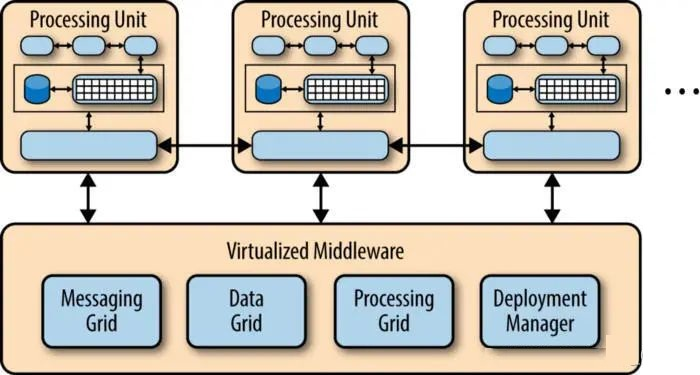